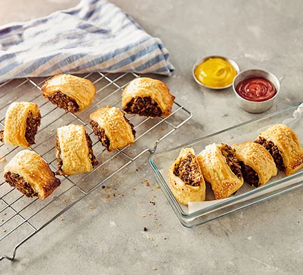

Vegan Sausage Rolls

A variation on an English classic. Perfect for a picnic.
Ingredients
- 250g chestnut mushrooms
- 3 tbsp olive oil
- 2 leeks, finely chopped
- 2 large garlic cloves, crushed
- 1 tbsp finely chopped sage leaves
- 1 tbsp brown rice miso
- 2 tsp Dijon mustard
- 30g chestnuts, very finely chopped
- 70g fresh white breadcrumbs
- 1 x 320g sheet ready-rolled puff pastry (not the all-butter version)
- plain flour for dusting
- dairy-free milk (like soya milk), to glaze
Steps
- Tip the mushrooms into a food processor and pulse until they are very finely chopped. Put half the olive oil in a large frying pan, add the leeks along with a pinch of salt and fry gently for 15 mins or until softened and golden brown. Scrape the leeks out of the pan, into a bowl and set aside to cool a little.
- Heat the remaining oil in the pan and fry the mushrooms for 10 mins over a medium heat. Add the garlic, sage, miso and mustard, and fry for a further minute. Leave to cool slightly.
- Heat the oven to 200C/180C fan/gas 6. Tip the mushroom mixture into the bowl with the leeks, then add the chestnuts and breadcrumbs. Season, then mix everything together until you have a slightly stiff mixture.
- Unravel the pastry on a floured surface, then roll the pastry out so that one side measures 43 cm. Mould the mushroom and leek mixture into a sausage shape down the centre of the pastry, then bring the pastry up around the filling and seal along the seam with a fork. Cut into ten pieces. Lay on a parchment-lined baking sheet and brush each piece with milk. Bake for 25 mins or until deep, golden brown. Leave to cool a little and sprinkle with sesame seeds before serving.